静岡・菊川のふたりが育てて、
注文をいただいてから精米。
顔が毎日見えるから、安心して家族に出せる。
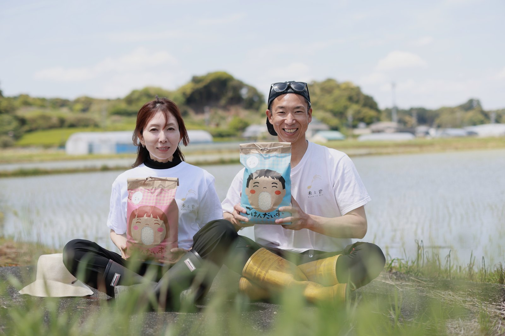
毎日、顔か声を届けますLIVE・動画・LINEのいずれかで
ご注文をいただいてから精米し2日以内に発送します
お米のこと、ちゃんとお伝えします保存のコツ・炊き方・選び方
一口食べた瞬間に広がる、自然な甘み。噛むほどに味わいが深まります。
お弁当やおにぎりにしても、ふっくらとした美味しさが続きます。
塩むすび、ご飯だけで満足。お米そのものが、ご馳走になります。
澄んだ空気と清らかな水、肥沃な大地で丁寧に育てたコシヒカリ。
甘み・香り・粘りのバランスが良く、冷めても美味しいのが特長です。
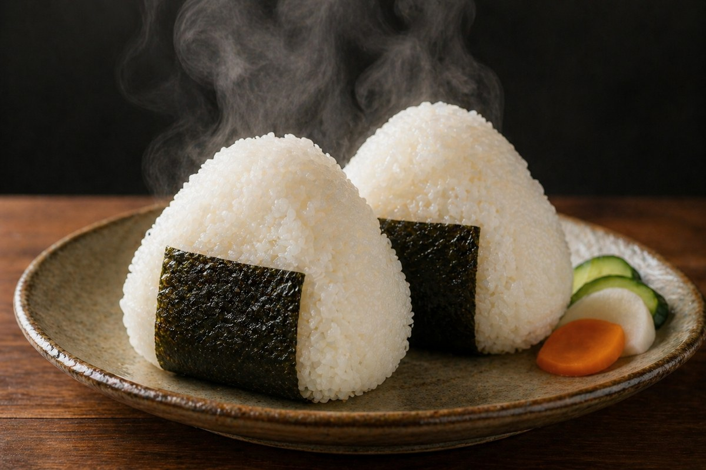
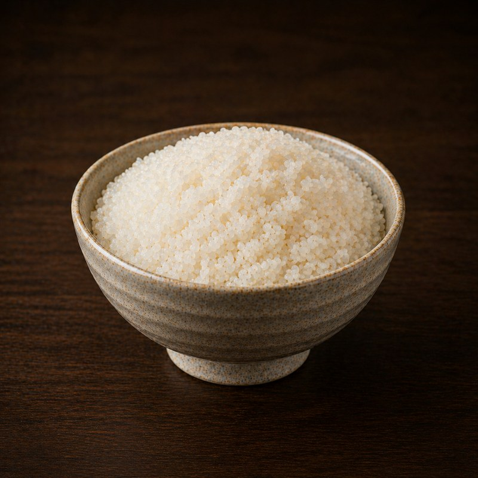
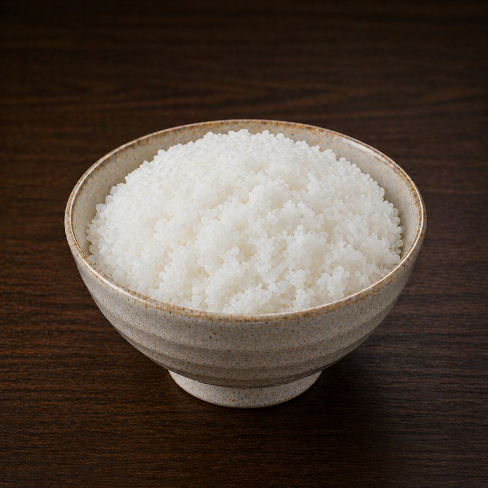
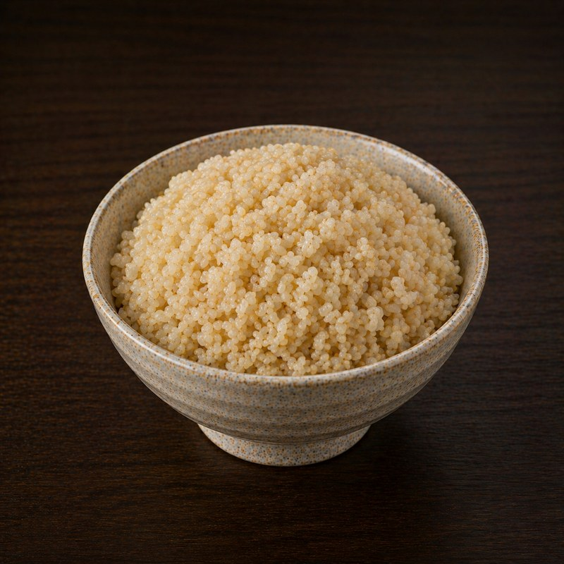
少量お試しから、大容量まで
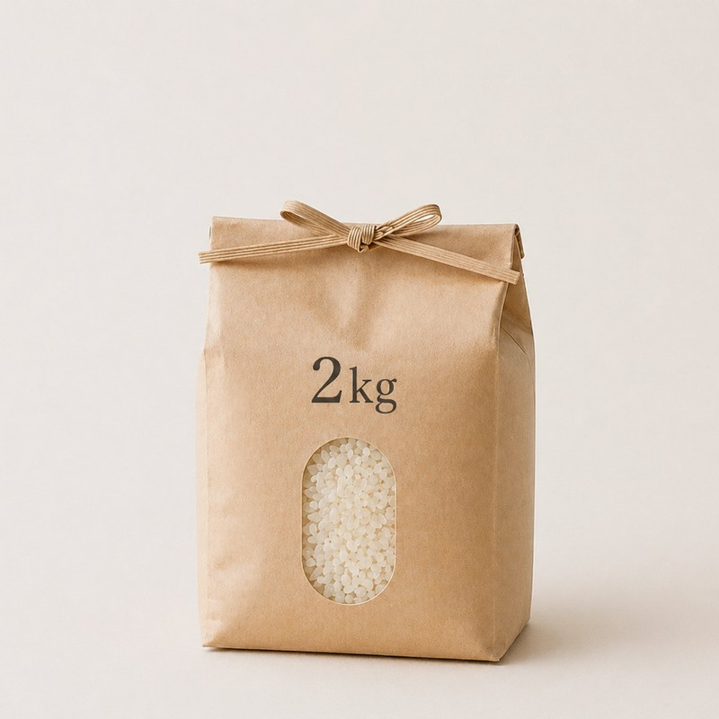
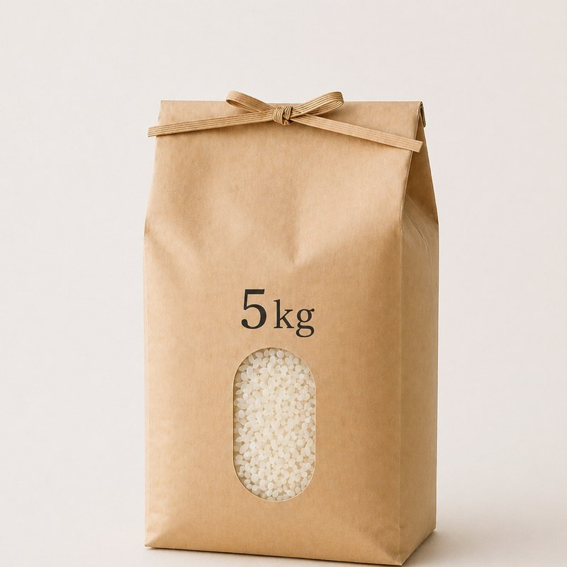
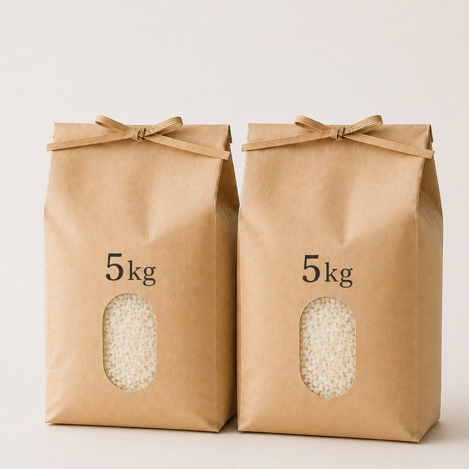
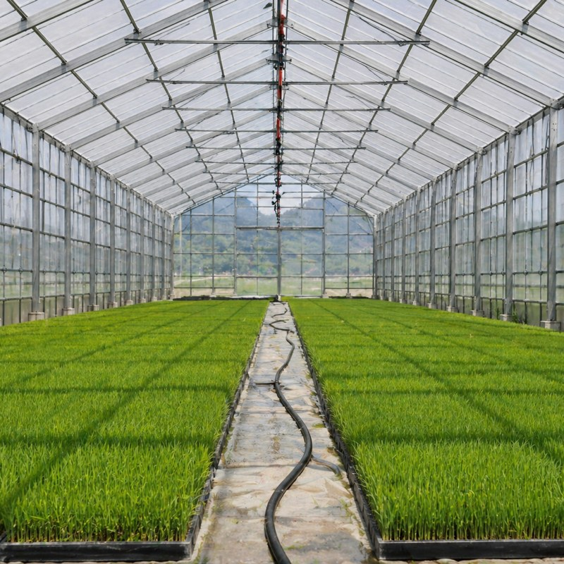
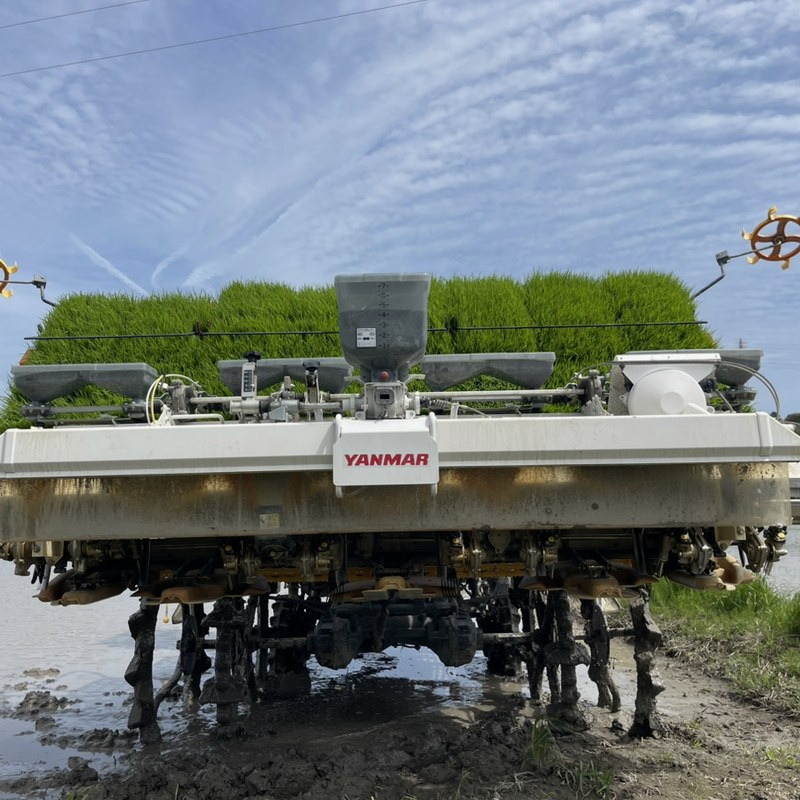
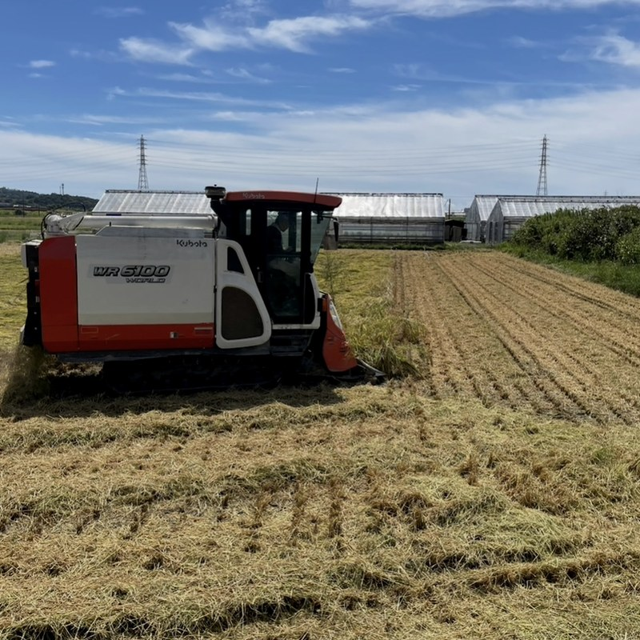
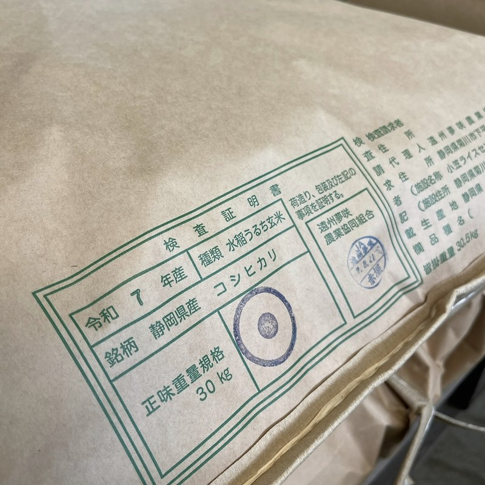
甘みと香りが全然違います。冷めても美味しいので、お弁当にしても好評です。
おにぎりが本当に美味しい。子どもが「このおにぎりが一番」と言って、よく食べるようになりました。
粒がしっかりしていて、炊きあがりのツヤも香りも、毎回感動しています。
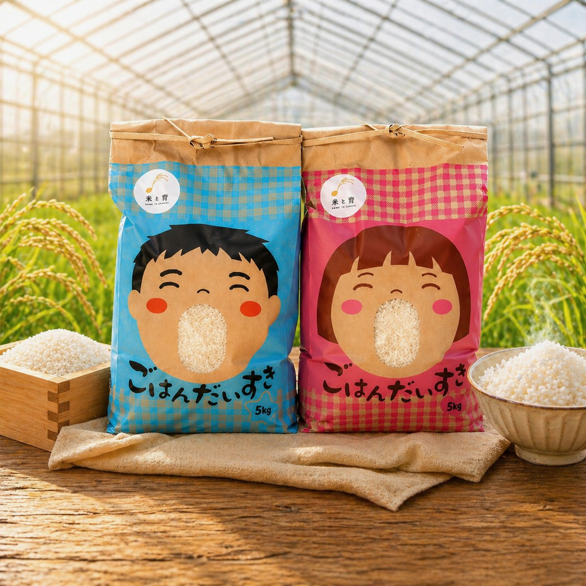